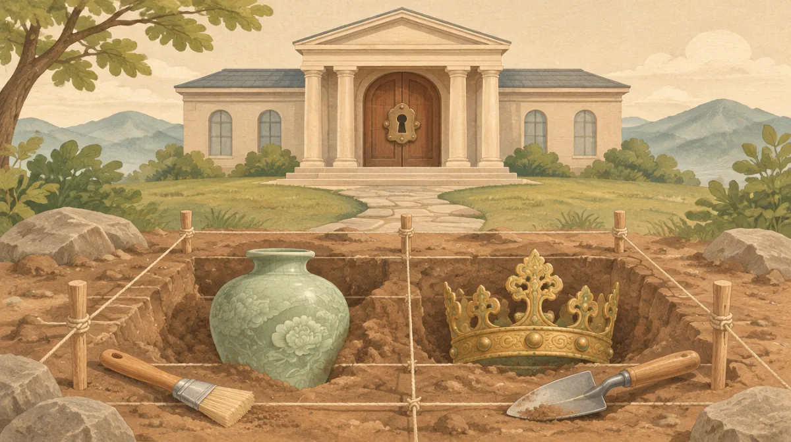

학번과 이름을 적어 줘
포털에서 열면 자동으로 채워져. (학번 5자리: 학년1 + 반2 + 번호2)
3학년 한국사 · 문화사 · 교과서 100~109쪽, 128~133쪽
흙 속에서 유물을 캐고,
박물관에서 탈출하라
곡괭이로 블록을 깨면 유물이 나온다. 유물이 왜 그 시대에 나왔는지 알아내면 팀 점수가 쌓여.
① 내 팀
② 오늘 활동
🏆 팀 점수는 이렇게
- 팀 점수 = 팀원 점수의 평균. 그날 출석한 팀원 모두로 나누고, 안 낸 사람은 0점.
- 평균으로 순위를 매겨 1위 40 · 2위 30 · 3위 20 · 4위 10 포인트. 평균이 같으면 같은 포인트.
- 보너스: 팀원 전원 제출 +5(발굴·방탈출 각각) · 방탈출에서 전원 탈출 +5.
1/1
✍️ 한 줄 쓰기
0자 (공백 빼고) · 최소 자
📱 내 태블릿으로 «담당 전시실» 하나를 맡는다
🏛️ 박물관 방탈출 — 입장
문이 잠겼다. 전시실마다 퍼즐 4개를 풀면 열쇠 숫자가 나온다. 내 태블릿에서는 내 담당 방만 열려. 다른 방 숫자는 그 방을 맡은 팀원에게 물어 모으고, 우리 팀 순서대로 넣으면 수장고 문이 열린다.
내 담당 전시실
힌트를 보거나 틀리면 그 퍼즐은 1점(안 보고 한 번에 풀면 3점). 담당 방을 다 풀면 다른 방 하나를 도우러 갈 수 있어(+2).
🎉 탈출!
«탈출 기록 제출»을 눌러야 내 점수가 팀 평균에 들어가.